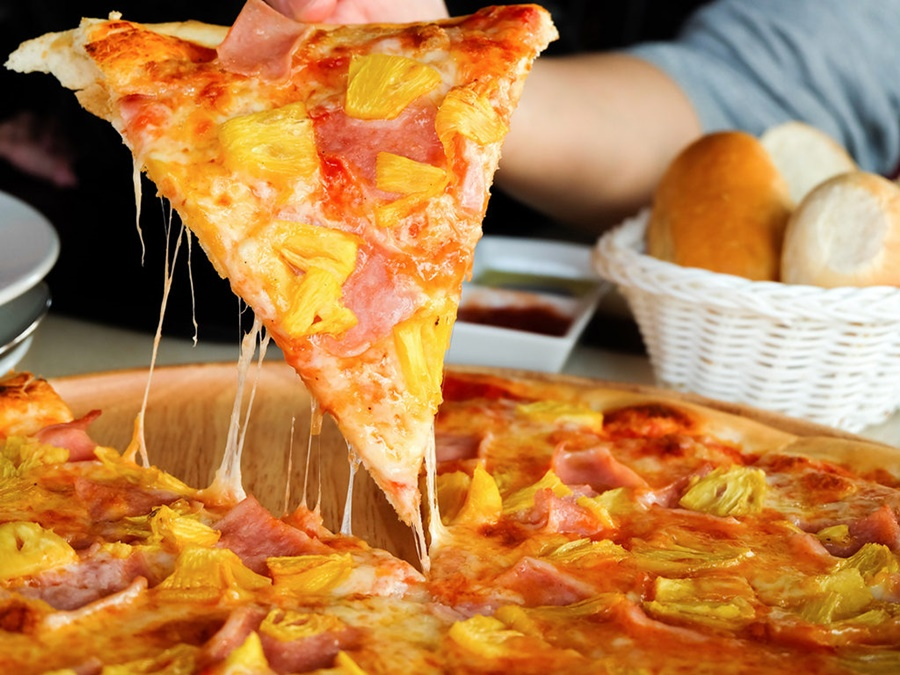
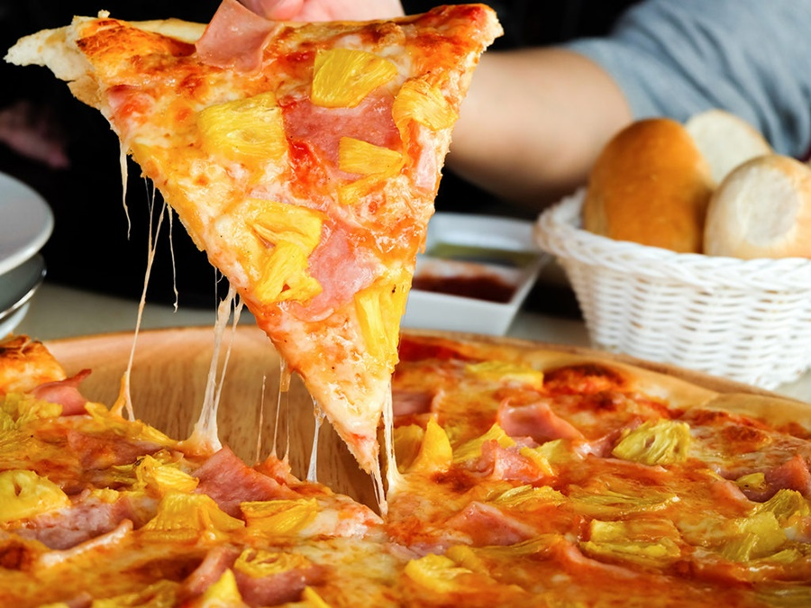

La pizza… A la mayoría se le nubla el entendimiento cuando se habla de ella, dejados llevar por la gula. Pensamos en nuestra favorita, con esa carne a la brasa, esa salsa barbacoa, auténtica mozzarella o incluso piña, que para gustos los colores. Y, o bien tomamos el teléfono para llamar a nuestra pizzería favorita en busca de una mesa o una comanda a domicilio, o bien nos ponemos manos a la obra en nuestra cocina. Porque hoy en día no hace falta tomar un avión a Nápoles para disfrutar de una buena pizza ni tampoco de una auténtica, aunque hablar de los orígenes de este manjar con sello italiano sea una historia de nunca acabar.
Nuestra pizzeria se llama "Pizzeria D&P", las letras significan D= deliciosa y P= perfecta. Le pusimos así porque desde 1987 ha sido una de las mejores pizzerias mas deliciosas y con una perfecta, unos de los ingredientes especiales y MUY IMPORTANTE es el amor y la dedicación que le podemos a nuestras pizzas.
Este restaurante fue fundado por los tataraabuelos de la "Familia Gonzalez Peréz", fue fundada en 1985, al principio esta gran pizzeria no tenía mucha fama y no era de las más deliciosas, hasta que en el año de 1987 se creó la mejor salsa de todas y el restaurante fue creciendo muy rápido y desde ese año ha sido de los mejores restaurantes de internacional.
Te invito a probar nuestras delicias
 
